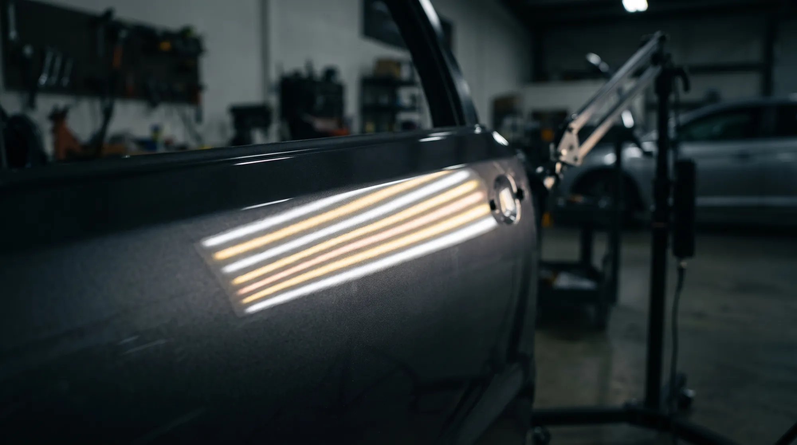
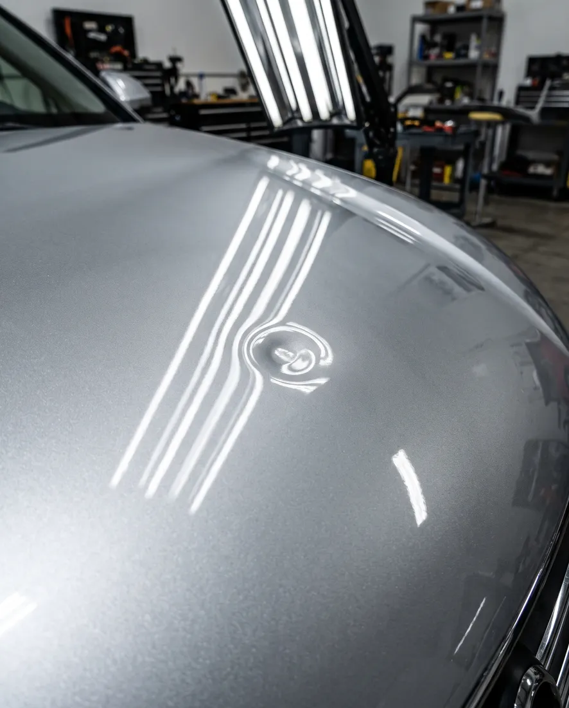
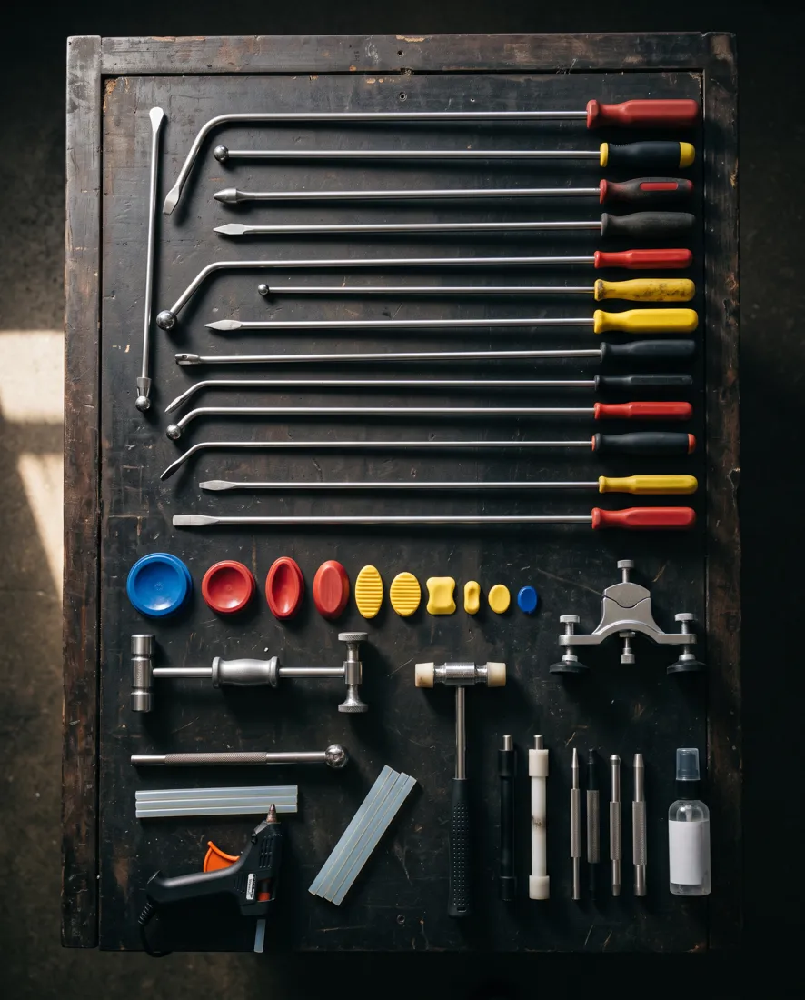
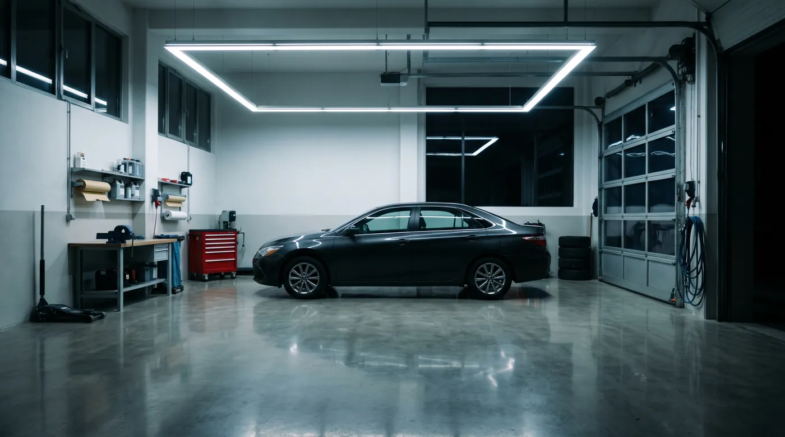

Ravnamo udubine na autu bez lakiranja. Originalna boja vozila ostaje netaknuta.
Ispod linija svjetla vidi se i najmanja udubina na limu. Kad su linije opet ravne, lim je opet ravan. Bez kita, bez brušenja, bez lakiranja.

Lim se vraća u oblik, a boja ostaje tvornička.
Radimo prema strogim standardima struke.
Pristupačne cijene, dogovorene nakon pregleda udubine.

Kvalitetni alati i provjerene tehnike.
Ulica Grge Franje Puđaka 22E. Lako dostupno iz cijelog Zagreba.
Nazovite ili pošaljite fotografiju udubine na 098 204 252.
Pogledamo udubinu i kažemo može li se izravnati bez lakiranja i koliko košta.
Lim vraćamo u oblik iznutra, alatom. Auto preuzimate bez tragova popravka.

Otvori u Google Maps